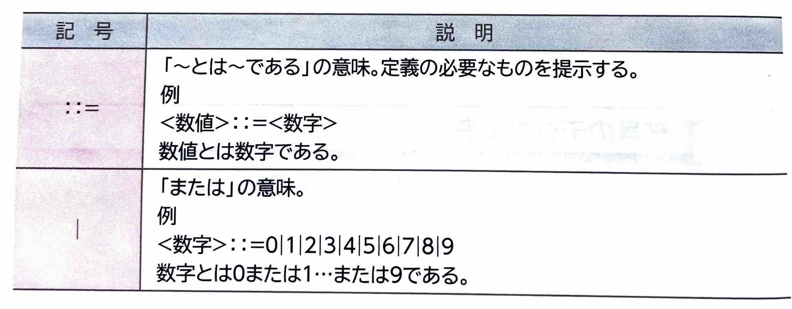
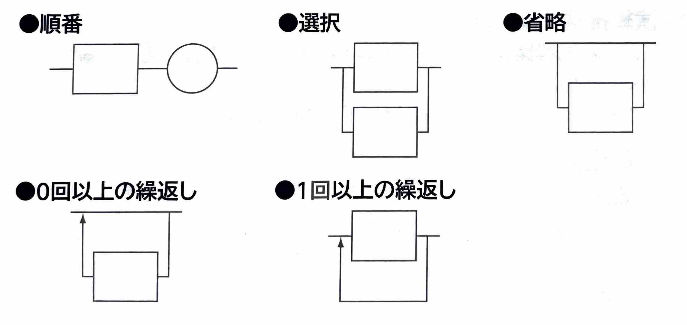

【 形式言語 】
表示
日本語や英語など、歴史の中で自然と発生した言語を｢自然言語｣
といいます。自然言語には、基本的な文法ではありますが、文法に沿わない部分もあるという特徴があります。
それに対して、プログラム言語など厳格な文法に沿って記述される言語を｢形式言語｣
といいます。
(1)文脈自由文法
｢文脈自由文法｣
とは、プログラム言語を正確に記述するための形式文法のひとつで、”〇〇とは✕✕である”という構文を定義します。
文脈自由文法で、”円周率とは、3.14...である。”と定義する場合、定義が必要なもの(ここでは”円周率”)を｢非終端記号｣といい、それ以上ほかのものに置き換えることができず定義が必要でないもの(ここでは”3.14...”)を｢終端記号｣
といいます。
(2)BNF
｢BNF｣
とは、文脈自由文法自体を定義するための言語のひとつで、｢バッカス・ナウア記述｣
ともいいます。
形式文法は厳密に定義されている必要があります。BNFで定義を行うとき、非終端記号は<>で囲み、終端記号はそのまま記載します。また、非終端記号と終端記号を次のような記号を使って関連付けます。

(3)構文図式
｢構文図式｣
とは、BNFで定義した構文を視覚的に図で表現したものです。非終端記号は▢、終端記号は◯で表現します。
構文図式には、次のような記述ルールがあります。
